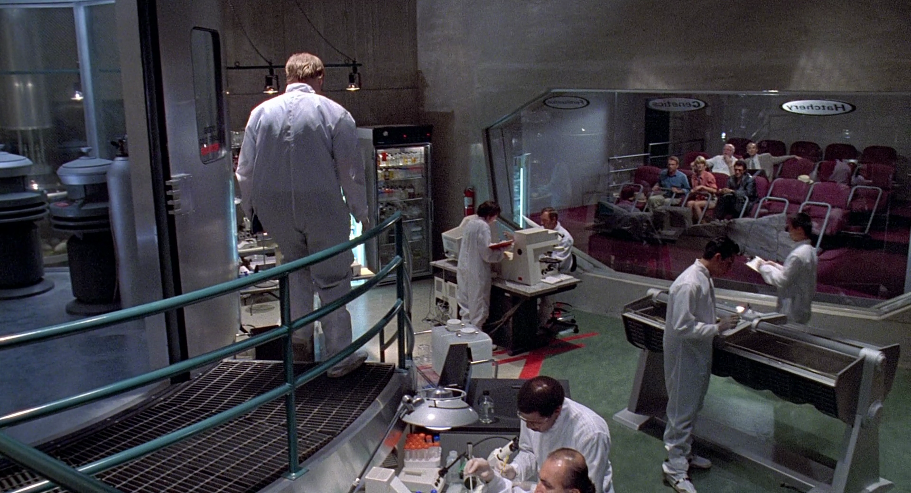
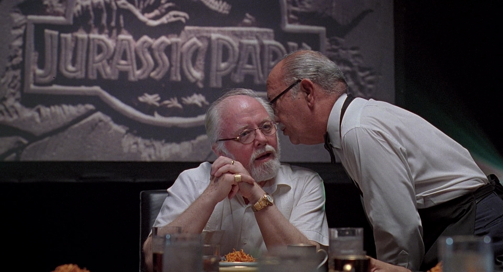
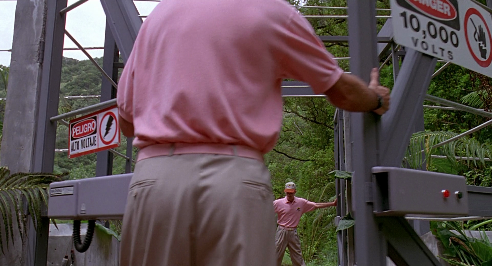

When Michael Crichton wrote Jurassic Park he employed the conceit that this was a reconstructed history, based on interviews with the survivors and drawing on various reports. He used this technique in other works such as The Andromeda Strain and Congo (and abandoned it for Sphere and Timeline).
In-universe, the book is at pains to emphasize the small number of people on Isla Nublar. In the introduction, Crichton writes that “fewer than twenty people [witnessed the events]” and that “only a handful survived.” The movie goes even further; all the non-essential personnel leave the island on the boat, leaving the VIPs to fend for themselves. From a Watsonian standpoint, this is ludicrous. Much like the letters of transit in Casablanca, Spielberg rightly figures that no one will challenge it if he keeps things rolling again. The Doylist explanation is that Spielberg wasn’t making an R-rated movie and wanted to limit the on-screen carnage (to a point).
Spielberg was also perhaps addressing a textual anomaly in the source material. Contrary to Crichton’s assertions about the limited number of people on the island, I can demonstrate that the minimum number of people on the island is forty. The Doylist explanation is that he lost count. That’s boring and we’re not doing that. The Watsonian explanation is for more sinister: the as-yet untold story of Jurassic Park is the wholesale slaughter of dozens of support personnel. Below I will count the number of people on the island. Page references are to the standard paperback. Bolded numbers are the character count.
Groups on the island
Inspection party
The first people to arrive on Isla Nublar are the inspection party, led by John Hammond. Hammond (1) and party fly in aboard an InGen helicopter from San José. With him are Dr. Alan Grant (2), Dr. Ellie Sattler (3), Dr. Ian Malcolm (4), Donald Gennaro (5), and Dennis Nedry (6). They are met at the helipad by Ed Regis (7), head of public relations. A single pilot flies the helicopter, and then it leaves the island soon afterward. Ed Regis later returns to the helipad to retrieve two more visitors: Tim (8) and Alexis (Lex) Murphy (9), John Hammond’s grandchildren. The text establishes that the helicopter returns to the mainland immediately.
Of these nine people, four die: Hammond is killed by a procompsognathus, Malcolm dies from injuries sustained from a tyrannosaurus, Regis is killed by the juvenile tyrannosaurus, and Nedry is killed by a dilophosaurus.
Genetics lab
There are “four technicians in lab coats” in the Extractions room when we first enter it (10-13). That makes four or five people in the room, depending on whether Dr. Henry Wu (14) is one of them.
There are “technicians” (15-16) in the Fertilization room when the tour party, including Dr. Wu, enter it. That means at least two more people.
There are “workers” (17-18) in the Hatchery room when Dr. Wu and party enter it. They pass through an additional door to enter the Nursery, so Kathy (19) isn’t one of them.
That makes a total of ten people in the genetics lab on Isla Nublar (pp. 98-107). Only two are named, and only Dr. Wu is explicitly encountered again. He is killed by a velociraptor. Nothing is ever said about the fate of the others.

Park staff
The second floor of the visitors center has offices labeled Park Warden, Guest Services, and General Manager. Of these, we encounter only the first, Robert Muldoon (20). It seems reasonable that these other positions were not yet hired, given that the park was incomplete. Beyond Muldoon, we also meet John Arnold (21), a systems engineer, and Dr. Gerry Harding (22), a veterinarian. Arnold is killed by a velociraptor; Muldoon and Harding survive.
Security guards
There are at least two security guards on Isla Nublar, and it seems reasonable to assume that there are more, both for coverage and to allow for multiple shifts. Those mentioned in the text are “Jimmy” (23), and the guard who talked to Jimmy (24). At least one of these is explicitly shown dead later in the text, but isn’t identified.
Maintenance workers
Two workers, Carlos (25) and Ramon (26), are called out by name. When Muldoon observes the headlights from Nedry’s jeep, he dismisses it as “another maintenance crew.” When the tour party inspects the raptor pen and the raptors set off the alarms, a “black man in coveralls.” (p. 118) He may be a maintenance worker.
Hospitality staff
The only named member of the hospitality staff is María (27). It’s unclear what the scope of her duties are and whether she also helps out in the main dining area, in addition to Hammond’s bungalow. The book refers to the genetics staff being “at dinner”, and Hammond mentions “calling down to the dining room” in anticipation of the tour party returning. At minimum this is two other people (28-29), not including any cleaning staff.

Construction workers
An unknown number of construction workers are present during the incident. Ellie observes that “[two] more Tican workmen had arrived at the lodge”; (p. 309) that means there are at least three. (30-32) Hammond passes “one of the Tican workmen”; the clear implication is that there are others. Later, the Costa Ricans airlift “Harding and some of the workmen.”
Gardeners
Muldoon refers to “gardeners” cleaning up the downed trees, so there are at least two (33-34), and probably not anyone we’ve encountered so far.
Tour guides
There are at least three tour guides: one woman and two men (p. 134). The woman (35) handes out pith helmets while the men (36-37) open the doors of the Land Cruisers. The men are described as black, but probably aren’t the man in overalls. We never see them again.

Food handlers
Like the gardeners these people are never seen, but there are repeated references to food handlers who feed the animals (38-39).
Arnold’s team
The text describes “Arnold’s team”, (p. 138) but it’s unclear who those men and women are. If they knew about computers, then they’re all dead by Saturday morning.
Deaths
Crichton states that there are twenty-four people on the island, of whom “eight are dead and six more are missing.” (p. 369) This is patently false. There are at least forty people on the island, and probably far more. It’s never specified, for example, where the permanent staff live while they’re on the island. The Safari Lodge? An unnamed and unseen dormitory? Presumably there is at least a skeletal housekeeping staff, and they aren’t mentioned. Eight people explicitly die in the text:
- Ed Regis
- Dr. Henry Wu
- John Arnold
- Dennis Nedry
- Security guard
- Security guard
- Dr. Ian Malcolm
- John Hammond
However, at the point in the narrative when Crichton wrote that, Hammond and Malcolm were still alive. Who are the other two? When the raptor attack begins those in the control room hear an unidentified person scream; more screams are heard later. This could be one of the security guards, or someone else. Lex steps on someone’s ear in the control room; again, this could be part of one of the security guards or it could be someone else.
As for the six missing, they could be drawn from the lab technicians, gardeners, maintenance crew, Tican workmen, tour guides, or unseen additional security guards. Possibly Arnold’s team, who are never seen.
Analysis
Prior to Grant leading a team to the raptor nest, there were 24 people on the island, according to Crichton, of whom eight were dead and six “missing.” (p. 369) As explained above, Malcolm and Hammond are still alive at this point. Who are the other eight living, according to Crichton? Grant, Sattler, Gennaro, Lex, and Tim from the inspection party. Harding and Muldoon from the staff. That already makes seven before we start counting “some of the workmen” taken off with Harding. Maybe they were among the “missing” and later found, but that still leaves a huge gap. We’re missing the all the technicians from the genetics lab, the maintenance workers, the gardeners, the tour guides, the food handlers, María, and any other hospitality staff.
There are two possibilities here: that the number of survivors was grossly undercounted, or the number of deaths were. There is no obvious reason to undercount survivors. If they survived they would be in a position to challenge the narrative. We proceed from the assumption that the deaths were undercounted, and the question is why, and how did they die?
The raptors are presented as vicious predators, yet they only kill four people: Dr. Wu, John Arnold, and two security guards. This seems implausible on its face. At least eight raptors were loose in the area around the Visitor Center. Electrified fences were off, doors were unlocked and unlockable, there were six emergency radios to go around. No general order was given to assemble in the Safari Lodge. If the maintenance workers and gardeners were in the park when the system collapsed they would have been highly vulnerable.
Another possibility is that some were killed when the Costa Rican military attacked the island. No doubt the Costa Ricans did their best to evacuate people, but the local environment was highly dangerous and one that no military on Earth was prepared for. It’s entirely conceivable that people died in the final moments, or were abandoned. The Costa Rican government wouldn’t want this discussed, and neither would InGen. Liability payments could be limited to the people whose death or body was actually witnessed by a survivor. Anyone else disappeared in an ecological disaster.
You only get to 24 by ignoring almost all of the support staff, and even 40 is likely a significant undercount, unless we’re to accept that there were only a handful of contractors on the island, only two or three each of maintenance and hospitality workers, and no housekeeping staff. It’s possible, even likely, that dozens of people died on Isla Nublar because of InGen’s negligence and that Crichton helped cover it up, reckoning that if he foregrounded false numbers, no one would notice the discrepancy in the text.